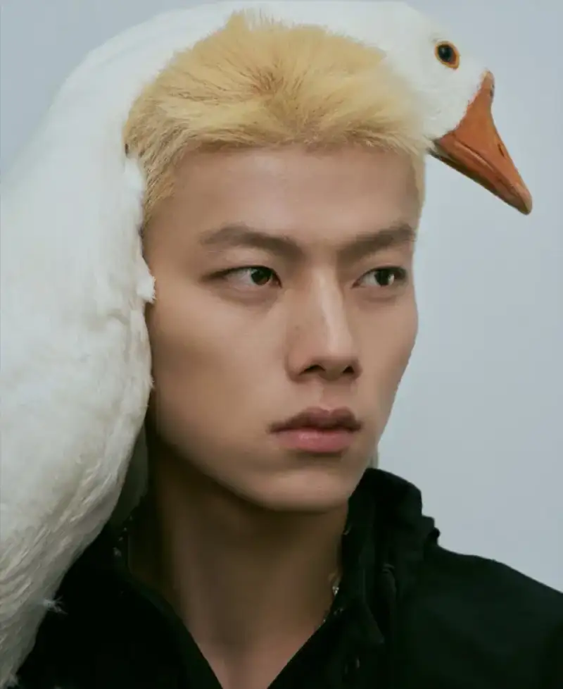
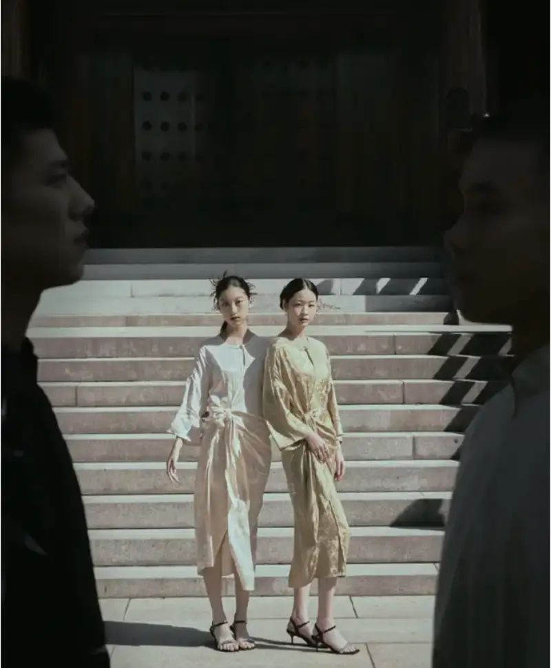
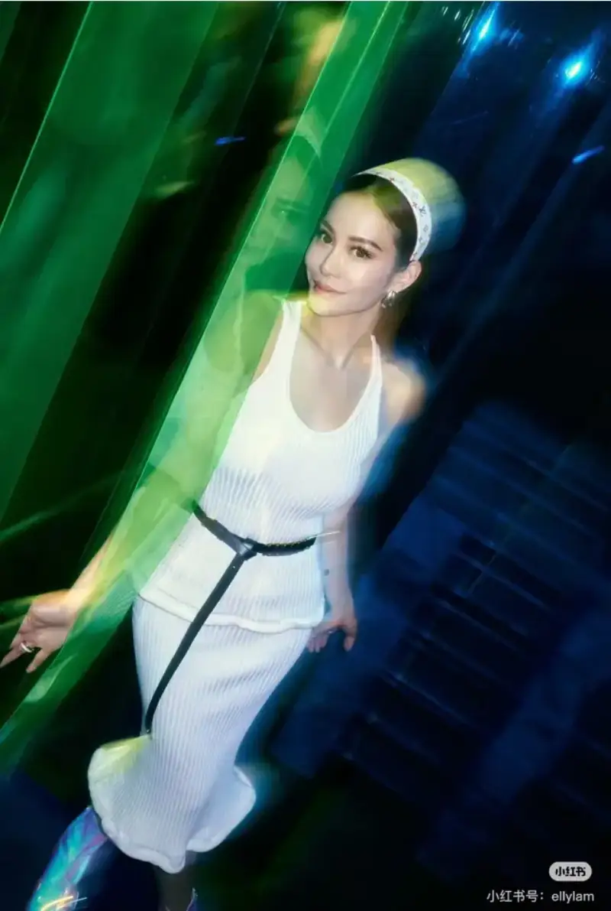
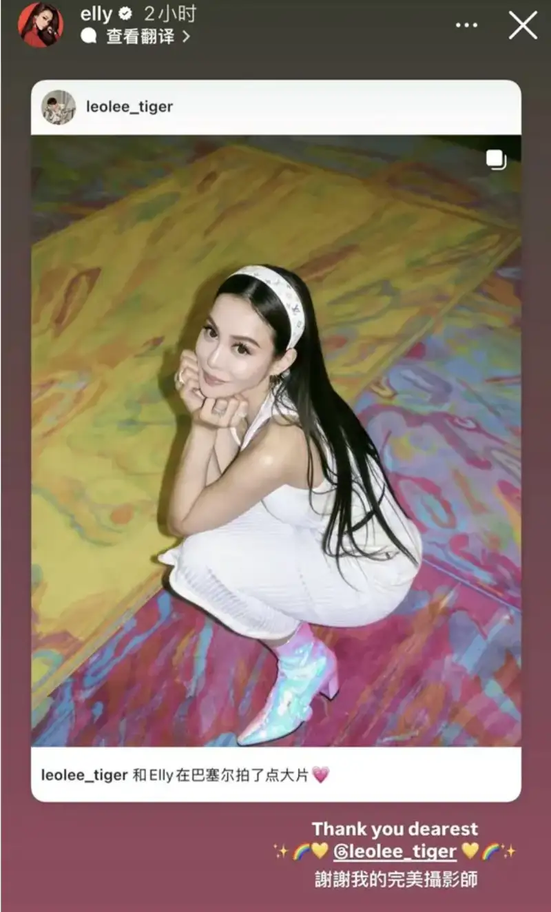

In fashion and art photography today, well-known names such as Chen Man, Zeng Wu, and Annie Leibovitz are widely known. Recently, young Chinese photographer Leo Lee has entered the public eye with a distinctive style. He shows the skill and artistic potential of a new generation.

Leo Lee was born in Hunan. He studied fashion design in college. After graduation, his strong interest in image art led him to move into image creation. His career started with the first professional camera his mother gave him, and that began his artistic journey. In his work, Leo Lee focuses on the life force of natural elements. He combines natural imagery with bold colors, and he brings in the aesthetic mood of Chinese culture. Over time he has built a visual language that is his own.


Early in his career, Leo Lee worked with many magazines and self-media creators. With a sharp sense of trends, he made a series of photographs that spread widely. The related photo sets drew broad attention and shares on social media. As his work grew, experts inside and outside the field recognized his skill. His partners grew to include people in sports and fashion. They include Olympic champions Wu Yanni and Xu Jiayu, and Hong Kong socialite Elly Lam. He shows his range across many fields. As a leading figure among China's young photographers, Leo Lee's artistic path is worth following.
